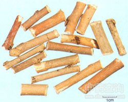

桑枝

拼音
Sānɡ Zhī
别名
桑条（《本草图经》）。
来源
本品为桑科植物桑Morus alba L.的干燥嫩枝。春末夏初采收，去叶，晒干，或趁鲜切片，晒干。
生境分布
全国大部分地区均产；主产江苏、浙扛、安徽、湖南、河北、四川等地。
药材特点
落叶灌木或小乔木，高3-15m。树皮灰白色，有条状浅裂；根皮黄棕色或红黄色，纤维性强。单叶互生；叶柄长l-2.5cm；叶片卵形或宽卵形，长5-20cm，宽4-10cm，先端锐尖或渐尖，基部圆形或近心形，边缘有粗锯齿或圆齿，有时有不规则的分裂，上面无毛，有光泽，下面脉上有短毛，腋间有毛，基出脉3条与细脉交织成网状，背面较明显；托叶披针形，早落。花单性，雌雄异株；雌、雄花序均排列成穗状葇荑花序，腋生；雌花序长l-2cm，被毛，总花梗长5-10mm；雄花序长1-2.5cm，下垂，略被细毛；雄花具花被片4，雄蕊4，中央有不育的雌蕊；雌花具花被片4，基部合生，柱头2裂。瘦果，多数密集成一卵圆形或长圆形的聚合果，长l-2.5cm，初时绿色，成熟后变肉质、黑紫色或红色。种子小。花期4-5月，果期5-6月。
性状
本品呈长圆柱形，少有分枝，长短不一，直径0.5～1.5cm。表面灰黄色或黄褐色，有多数黄褐色点状皮孔及细纵纹，并有灰白色略呈半圆形的叶痕和黄棕色的腋芽。质坚韧，不易折断，断面纤维性。切片厚0.2～0.5cm，皮部较薄，木部黄白色，射线放射状，髓部白色或黄白色。气微，味淡。
性味
微苦，平。
功能主治
祛风湿，利关节。用于肩臂、关节酸痛麻木。
用法用量
9～15g。
化学成分
桑枝含鞣质，游离的蔗糖、果糖、水苏糖、葡萄糖、麦芽糖、棉子糖、阿拉伯糖、木糖。茎含黄酮成分桑素、桑色烯、环桑素、环桑色烯。木材含桑色素、柘树宁、桑酮、四羟基芪、二氢桑色素、二氢山柰酚。
药理作用
1：无药理作用数据
摘录
《中国药典》